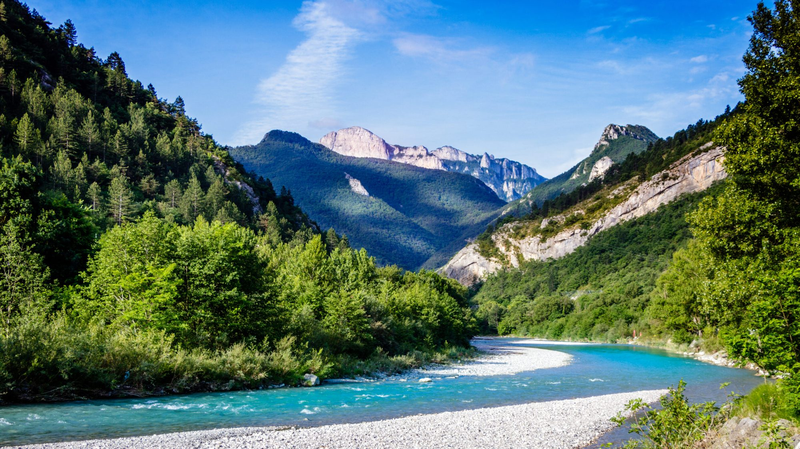

Op ongeveer 30 minuten van Les Cabritas toont de vallei van de Drôme een heel andere kant van de streek: heuvels met wijngaarden, karaktervolle dorpen en een wilde rivier met kristalhelder water. Het is een van de weinige rivieren in Frankrijk zonder stuwdam, waardoor ze een natuurlijke loop en opmerkelijk helder water heeft behouden, vooral gewaardeerd in de zomer.

Authentieke dorpen langs het water
Het dorp Saillans, aan de oever van de Drôme tussen Die en Crest, vat de charme van de vallei samen met zijn oude straatjes, arcaden, fonteinen en Romeins marmeren fronton. Hoger in de vallei staat Die bekend om zijn wijngaarden en zijn beroemde mousserende Clairette de Die, terwijl andere hooggelegen dorpen uitnodigen om tussen wijnstokken en rotswanden te dwalen.
Zwemmen, kanoën en fietsen
De Drôme is een waar paradijs voor zwemliefhebbers, met talrijke natuurlijke strandjes en poelen over de hele loop van de rivier. De Roanne, een van de zijrivieren, is zelfs bekend om haar turquoise water als op een ansichtkaart. Liefhebbers van kanoën, mountainbiken en wandelen komen ook aan hun trekken, met name langs de GR9 die door de vallei loopt. Een ideale dag aan het water, waarbij u zwemmen combineert met het ontdekken van lokaal erfgoed.
Goed om te weten voor uw bezoek
Omdat de meeste zwemplekken aan de Drôme zonder toezicht zijn, is voorzichtigheid geboden, vooral met jonge kinderen, en controleert u best de waterstand naargelang het seizoen. Veel lokale producenten, met name van Clairette de Die en Crémant de Die AOC, bieden onderweg rondleidingen en proeverijen aan. De vallei is ook ideaal voor een rustige fietstocht over de binnenwegen tussen de dorpen, met veel uitkijkpunten over de wijnterrassen. In verschillende dorpen van de vallei is wekelijks een boerenmarkt, de perfecte gelegenheid om een lokale picknick samen te stellen voordat u 's middags naar een van de vele kiezelstrandjes gaat.
Praktische informatie vanuit Les Cabritas
- Afstand vanaf Flaviac: ongeveer 30 min rijden
- Afstand vanaf Saint-Alban-Auriolles: ongeveer 1u30 rijden
- Beste periode: juni tot september om te zwemmen
- Ideaal voor: zwemmen in de rivier, fietsen, dorpen, wijntoerisme
Zin om de vallei van de Drôme te ontdekken vanuit uw vakantiehuis in de Ardèche?
Les Cabritas verwelkomt u in twee vakantiehuizen met privézwembad: in Flaviac, in het hart van de Ardèche, en in Saint-Alban-Auriolles, in het hart van de Zuid-Ardèche.